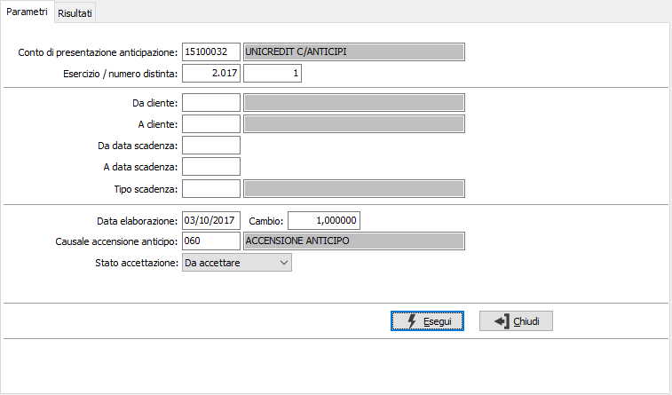
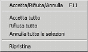
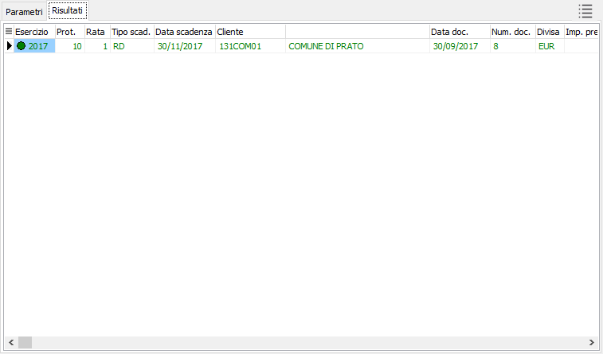

Accensione anticipo
Il programma di accensione permette di generare la scrittura contabile di accredito del conto corrente ordinario con contestuale addebito del conto anticipi.
Una volta selezionata la distinta di anticipazione stampata in definitivo è possibile filtrare i risultati indicando un intervallo di clienti, di data e la tipologia movimento scadenza. La data di elaborazione è la data con cui sarà generato il movimento contabile con la causale di giroconto sotto indicata; tale codice causale proposto è quella inserito in configurazione del modulo. Il cambio, campo attivo se la distinta selezionata è stata creata con una valuta diversa rispetto a quella di gestione, riporta il tasso di cambio alla data di elaborazione. È possibile impostare manualmente un tasso diverso da quello proposto oltre che selezionare i tassi di cambio presenti in archivio tramite lo zoom (F9) sul campo stesso. L'ultimo campo che compone la finestra dei parametri è lo “Stato accettazione”, tale elenco valori permette di scegliere le rate della distinta che risultano:
Da accettare
Accettate
Respinte
Tutte


Una volta confermata la selezione viene mostrata la finestra dei risultati dove è possibile modificare, tramite il doppio click sulla riga selezionata, o tramite il menù contestuale del tasto destro del mouse, lo stato della singola rata. Sulla colonna dell’importo concesso potremo indicare, cliccando sulla cella interessata, l’importo che la banca ha deciso di concedere nell’ipotesi che questo sia diverso da quello richiesto. In alto a destra della finestra è presente un pulsante che mostra la legenda dei possibili colori che saranno attribuiti alle righe della griglia.Per quanto concerne il comportamento della procedura occorre indicare che se una rata risulta già concessa quando si accede alla finestra dei risultati indipendentemente dalla data di elaborazione indicata nei parametri sarà variato il movimento contabile precedentemente generato. Inoltre quando una rata passa dallo stato “Da accettare” a “Concessa” sarà creato sempre un nuovo movimento contabile e quindi a parità di distinta e data di elaborazione, se sono state eseguite due accensioni in due momenti diversi saranno creati due movimenti contabili.
Nel caso in cui sia stato variato l’importo concesso di una rata che in precedenza ha generato il movimento contabile oppure una rata da concessa torna ad essere “Da accettare” o diventa “Respinta” sarà mostrata una finestra che riporta l’esito dell’operazione con gli estremi dell’esercizio / protocollo contabile modificato o eliminato.
Al termine del salvataggio verrà richiesto se stampare la lista di prima nota dei movimenti contabili generati.
